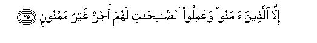

بسم الله الرحمن الرحيم
Sayyid Abul Ala Maududi - Tafhim al-Qur'an - The Meaning of the Qur'an
 84.
Surah Inshiqaq (The Splitting)
84.
Surah Inshiqaq (The Splitting)
It is derived from the word inshaqqat in the first verse. Inshaqqat is infinitive which means to split asunder, thereby implying that it is the Surah in which mention has been made of the splitting asunder of the heavens.
This too is one of the earliest Surahs to be revealed at Makkah. The internal evidence of its subject matter indicates that persecution of the Muslims had not yet started; however, the message of the Qur'an was being openly repudiated at Makkah and the people were refusing to acknowledge that Resurrection would ever take place when they would have to appear before their God to render an account of their deeds.
Its theme is the Resurrection and Hereafter.
In the first five verses not only have the state of Resurrection been described vividly but an argument of its being true and certain also have been given. It has been stated that the heavens on that Day will split asunder, the earth will be spread out plain and smooth, and it will throw out whatever lies inside it of the dead bodies of men and evidences of their deeds so as to become completely empty from within. The argument given for it is that such will be the Command of their Lord for the heavens and the earth; since both are His creation. they cannot dare disobey His Command. For them the only right and proper course is that they should obey the Command of their Lord.
Then, in vv 6-19 it has been said that whether man Is conscious of this fact or not, he in any case is moving willy nilly to the destination when he will appear and stand before his Lord. At that time all human beings will divide into two parts: first those whose records will be given in their right hands: they will be forgiven without any severe reckoning; second those whose records will be given them behind their back. They will wish that they should die somehow, but they will not die; instead they will be cast into Hell. They will meet with this fate because in the world they remained lost in the misunderstanding that they would never have to appear before God to render an account of their deeds, whereas their Lord was watching whatever they were doing, and there was no reason why they should escape the accountability for their deeds. Their moving gradual]y from the life of the world to the meting out of rewards and punishments in the Hereafter was as certain as the appearance of twilight after sunset, the coming of the night after the day, the returning of men and animals to their respective abodes at night, and the growing of the crescent into full moon.
In conclusion, the disbelievers who repudiate the Qur'an instead of bowing down to God when they hear it, have been forewarned of a grievous punishment and the good news of limitless rewards has been given to the believers and the righteous.

In the name of Allah, the Compassionate, the Merciful.
[1-15] When the heaven splits asunder, and obeys its Lord's Command,1 as in truth it must (obey its Lord's Command). And when the earth is spread out,2 and throws out whatever is within it, and becomes empty,3 and obeys its Lord's Command, as in truth it must (obey the Command).4 O man, you are moving on towards your Lord, willy nilly,5 and are about to meet Him. Then he whose record is given in his right hand, shall have an easy reckoning,6 and he shall return to his kinsfolk rejoicing.7 As for him whose record is given him behind his back,8 he shall call for death and shall enter a blazing Fire. For he lived among his kinsfolk, completely absorbed,9 and deemed he would never return. Why not! His Lord was ever watching his misdeeds.10


[16-25] So no! I swear by the twilight and the night and what it gathers together, and the moon when it grows full, that you have surely to pass from one state to another gradually.11 Then, what is the matter with these people that they do not believe, and when the Qur'an is recited before them, they do not fall prostrate?12 But, on the contrary, the disbelievers deny, although Allah knows best what they are collecting (in their record).13 Therefore, give them the good news of a painful torment. However, those who have believed and done righteous deeds, shall have a reward that will never fail.
1Literally: "... and hears its Lord's Command." However, according to Arabic usage adhina lahu does not only mean: "He heard the Command but it means: "Hearing the Command he carried it out promptly like an obedient servant. "
2"When the earth is spread out": when the oceans and rivers are filled up, the mountains are crushed to pieces and scattered away, and the earth is leveled and turned into a smooth plain. In Surah Ta Ha, the same thing has been expressed, thus: "He will turn the earth into an empty level plain, wherein you will neither see any curve nor crease." (vv 106-107) Hakim in Mustadrak has related through authentic channels on the authority of Hadrat Jabir bin 'Abdullah a saying of the Holy Prophet (upon whom be peace) to the effect: "On the Resurrection Day the earth will be flattened out and spread out like the table-cloth; then there will hardly be room on it for men to place their feet." To understand this saying one should keep in mind the fact that out that Day all men who will have been born from the first day of creation till Resurrection, will be resurrected simultaneously and produced in the Divine Court. For gathering together such a great multitude of the people it is inevitable that the oceans, rivers, mountains, jungles, ravines and all high and low areas be leveled and the entire globe of the earth be turned into a vast plain so that all individuals of human race may have room on it to stand on their feet.
3That is, it will throw out all dead bodies of men and also the traces and evidences of their deeds lying within it. so that nothing remains hidden and buried in it.
4Here, it has not been expressly told what will happen when such and such an event takes place, for the subsequent theme by itself explains this, as if to say: "O man, you are moving towards your Lord and are about to meet Him; you will be given your conduct book; and rewarded or punished according to your deeds."
5That is, "You may if you so like think that all your efforts and endeavors in the world are confined to worldly life and motivated by worldly desires, yet the truth is that you are moving, consciously or unconsciously, towards your Lord and you have ultimately to appear before Him in any case.."
6That is, his reckoning will be less severe: he will not be asked why he had done such and such a thing and what excuses he had to offer for it. Though his evil deeds also will be there along with his good deeds in his records, his errors will be overlooked and pardoned in view of his outweighing good deeds. In the Holy Qur'an, for the severe reckoning of the wicked people the words su-al-hisab (heavy reckoning) have been used (Ar-Ra'd: 18), and concerning the righteous it has been said: "From such people We accept the best of their deeds and overlook their evils." (Al-Ahqaf: 16). The explanation of it given by the Holy Prophet (upon whom be peace) has been related in different words by Imam Ahmad Bukhari, Muslim, Tirmidhi, Nasa'i, Abu Da'ud, Hakim, Ibn Jarir, `Abd bin Humaid, and Ibn Marduyah on the authority of Hadrat 'A'ishah. According to one of these traditions the Holy Prophet (upon whom be peace) said: "Doomed will be he who is called to account for his deeds. Hadrat 'A'ishah said: O Messenger of Allah, has not Allah said: 'He whose record is given in his right hand shall have an easy reckoning?' The Holy Prophet replied: That is only about the presentation of the deeds, but the one who is questioned would be doomed." In another tradition Hadrat 'A'ishah has related: "I once heard the Holy Prophet supplicate during the prayer, thus: O God, call me to a light reckoning. When he brought his Prayer to conclusion, I asked what he meant by that supplication. He replied: Light reckoning means that one's conduct book will be seen and one's errors will be overlooked. O 'A'ishah, the one who is called to account for his deeds on that Day, would be doomed.
7"His kinsfolk": his family and relatives and companions who will have been pardoned even like himself.
8In Surah Al Haaqqah: 25, it was said that his record will be given him in his left hand but here "behind his back. ! This will probably be for the reason that he would already have lost all hope that he would be given his record in his right hand, for he would be well aware of his misdeeds and sure to receive his record in his left hand. However, in order to avoid the humiliation of receiving it in the left hand, in front of all mankind, he will withdraw his hand behind and so would receive it 'behind his back."
9That is, his way of life was different from that of God's righteous men, about whom in Surah At-Tur: 26, it has been said that they lived among their kinsfolk in fear and dread of God, i.e. they fear lest they should ruin their own Hereafter on account of their absorption in the love of children and endeavors for the sake of their well-being and prosperity in the world. On the contrary, this man lived a life free from every care and worry and helped his children and kinsfolk also to enjoy life fully, no matter what wicked and immoral methods he had to use to procure the means of enjoyment, how he had to usurp the rights of others and transgress the bounds set by Allah for the sake of the worldly pleasures.
10That is, it was against God's justice and His wisdom that He should overlook the misdeeds that he was committing and should not summon him before Himself to render his account of the deeds.
11That is, "You will not remain in one and the same state, but will have to pass through countless stages gradually, from youth to old age, from old age to death, from death to barzakh (the intermediary state between death and Resurrection), from barzakh to Resurrections from Resurrection to the Plain of Assembly, then to the Reckoning, and then to the meting out of rewards and punishments. An oath has been sworn by three things to confine this:
(1) by the twilight,
(2) by the darkness of night and the gathering together in it of all those human beings and animals who remain scattered in the day time, and
(3) by the moon's passing through different phases to become full. These are some of those things which testify that rest and stillness is unknown in the universe in which man lives. There is a continuous and gradual change taking place everywhere. Therefore, the disbelievers are wrong in thinking that life comes to an end after man has breathed his last.
12"They do not fall prostrate": they do not bow down to God out of fear of Him. To perform a sajdah (prostration) here is confirmed by the practice of the Holy Prophet (upon whom be peace). lmam Malik, Muslim and Nasa'i have related a tradition concerning Hadrat Abu Huraira (may Allah be pleased with him), saying that he recited this Surah in the Prayer and performing a sajdah here said: "The Holy Prophet (upon whom be peace) performed a sajdah at this point." Bukhari; Muslim, Abu Da'ud and Nasa'i have cited this statement of Abu Rafi`: "Hadrat Abu Huraira recited this Surah in the 'Isha' Prayer and performed a sajdah When I asked why he had done so, he replied: I prayed under the leadership of Abul Qasim (upon whom be Allah's peace) and he performed a sajdah here. Therefore, I will continue to perform this sajdah likewise as long as 1 live." Muslim, Abu Da'ud, Tirmidhi, Nasa'i, Ibn Majah and others have related another tradition saying that Hadrat Abu Huraira said: "We performed sajdah behind the Holy Messenger of Allah in this Surah and in Iqra' bi-ismi Rabbik-alladhi khalaq.
13Another meaning also can be: "Allah knows best what tilth of disbelief, malice, hostility to the Truth and evil intentions and designs they keep tilled in their breasts."